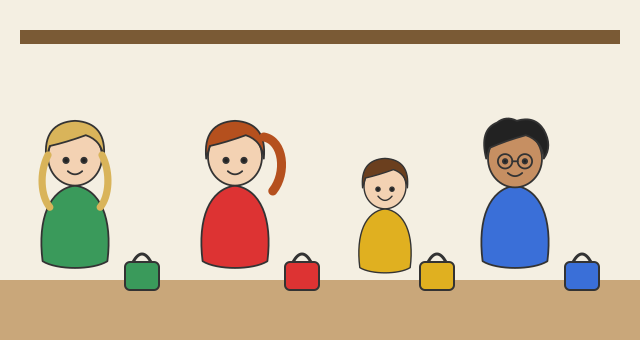

Zu wem gehört es? my, your, our, their
Mit einem KI-Tutor lernen
Ein KI-Tutor erklärt dir diese Seite und hilft dir bei den Aufgaben. Wähl deinen Assistenten:
Mit Claude öffnen Mit ChatGPT öffnen Mit Mistral Vibe öffnen
Du nutzt dein eigenes Konto beim Anbieter. Der Assistent ist kein Angebot von lernapps.net: lernapps liefert nur Inhalte und Aufgaben. Die Wahl gilt für alle Seiten, nur auf diesem Gerät.
Taschen und Jacken im Flur

Von links nach rechts Sophie, Ellie, Peter und Amir. Vor jedem Kind steht eine Tasche.
Quelle: eigene Zeichnung. Lizenz: CC-BY-4.0.Nach dem Training stehen die Kinder im Flur. Ihre Taschen stehen auf dem Boden. Ellie sagt: „I can see my phone.“ Das heißt: „Ich kann mein Handy sehen.“ phone heißt „Handy“, bag „Tasche“, jacket „Jacke“, ball „Ball“, book „Buch“, hat „Hut“, bike „Fahrrad“ und dog „Hund“. your heißt „dein“ oder „euer“, our „unser“ und their „ihr“, wenn es mehreren gehört.
Das kannst du danach: Du sagst auf Englisch, wem etwas gehört, mit my, your, our und their.
Aufgabe
Lösung
Amirs eigenen Hut richtige Antwort
my heißt „mein“ oder „meine“. Der Sprecher sagt, dass der Hut ihm gehört.
Ellies Hut
Für Ellies Hut würde Amir etwas anderes sagen. my meint immer die sprechende Person.
Peters Hut
Amir sagt my, also gehört der Hut der sprechenden Person.
my sagt, dass etwas der Person gehört, die spricht.
Welches Wort sagt, wem etwas gehört?
Die dritte Frage der Tabelle ist Zu wem gehört es? Das Wort steht vor dem Nomen und sagt, zu wem etwas gehört. Es heißt Possessivbegleiter. Für er, sie und es steht in der dritten Spalte noch ein Fragezeichen. Das kommt auf der nächsten Seite.
| Person | Wer tut es? | Wen trifft es? | Zu wem gehört es? |
|---|---|---|---|
| ich | I | me | my |
| du / ihr | you | you | your |
| er | he | him | ? |
| sie (ein Mädchen) | she | her | ? |
| es | it | it | ? |
| wir | we | us | our |
| sie (mehrere) | they | them | their |
Merke
Das Wort steht vor dem Nomen: my hat, your bike, our phone, their dogs. Anders als im Deutschen ändert es sich nie: my dog, my dogs. Nach dem Muster I – me – my gehören die drei Wörter einer Person zusammen. me und my sind nicht dasselbe: me sagt, wen es trifft, my sagt, wem etwas gehört.
Übung
Aufgabe
Lösung
Richtige Antwort: Ellie spricht über ihre eigene Tasche. – my; Ellie spricht zu Amir über seine Jacke. – your; Sophie und Ellie sprechen über ihren eigenen Ball. – our; Sophie spricht über die Bücher von Amir und Peter. – their
Das Wort richtet sich danach, wem etwas gehört. my ist für die sprechende Person, your für die angesprochene, our für Sprecher und andere, their für andere.
Aufgabe
Lösung
me
me sagt, wen es trifft. Zu wem etwas gehört, sagst du mit my.
my richtige Antwort
my steht vor dem Nomen und gehört zur sprechenden Person.
I
I sagt, wer etwas tut. Vor dem Nomen steht my.
Vor dem Nomen steht my.
Aufgabe
Lösung
their richtige Antwort
their gehört zu mehreren anderen Personen.
them
them sagt, wen es trifft. Zu wem etwas gehört, sagst du mit their.
our
Es geht um Amir und Peter, also their.
Zu mehreren anderen Personen gehört their.
Aufgabe
Ergänze das Wort für „wer tut es?“ und das Wort für „zu wem gehört es?“.
- Ich kann meine Tasche sehen. → … can see … bag.
- Wir können unseren Ball sehen. → … can see … ball.
- Sie (Amir und Peter) können ihren Ball sehen. → … can see … ball.
Lösung
- I can see my bag.
- We can see our ball.
- They can see their ball.
Aufgabe
Schreibe den Satz auf Englisch.
- Du kannst deine Tasche sehen.
- Ich kann meine Bücher sehen.
- Wir können unseren Ball sehen.
- Sie (Amir und Peter) können ihren Ball sehen.
Lösung
- You can see your bag.
- I can see my books.
- We can see our ball.
- They can see their ball.
Aufgabe
Lösung
Richtige Antwort: Die Aussage stimmt nicht.
Vor dem Nomen steht my, nicht me. me sagt, wen es trifft.
Aufgabe
Hör zu und schreibe, was du hörst.
- KI
- KI
- KI
Lösung
- I can see your jacket.
- We can see their books.
- They can see our ball.
Aufgabe
Ergänze die Spalte „Zu wem gehört es?“ ohne nachzusehen.
| Person | Wer tut es? | Wen trifft es? | Zu wem gehört es? |
|---|---|---|---|
| ich | I | me | … |
| du / ihr | you | you | … |
| wir | we | us | … |
| sie (mehrere) | they | them | … |
Lösung
- ich · I · me · my
- du / ihr · you · you · your
- wir · we · us · our
- sie (mehrere) · they · them · their
Selbst sagen
Aufgabe
Hör zu, sprich nach und nimm dich auf. Vergleiche dann mit dem Original.
Tipp
Hör das Beispiel zuerst. Sprich dann langsam nach und vergleiche deine Aufnahme mit dem Original.
- You can see my book.KI
- We can see your bag.KI
- They can see my jacket.KI
Zum Aufnehmen braucht diese Aufgabe JavaScript. Die Beispiele kannst du auch ohne anhören.
Lösung
- You can see my book.
- We can see your bag.
- They can see my jacket.
Wie es weitergeht
Auf dem Poster fehlen noch die Wörter für er, sie und es in der dritten Spalte. Auf der nächsten Seite lernst du, welches Wort bei einem Jungen und welches bei einem Mädchen steht.